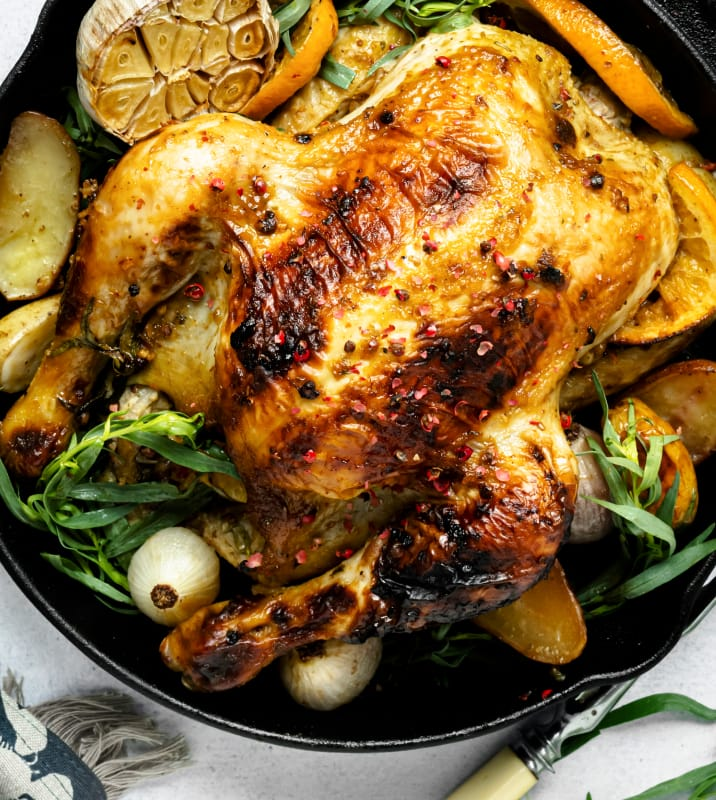

<ion-header class="ion-no-border">
  <ion-toolbar>
    <ion-buttons slot="start" mode="md">
      <ion-back-button class="recipe-back_btn"> </ion-back-button>
    </ion-buttons>
  </ion-toolbar>
</ion-header>

<ion-content [fullscreen]="true" color="light">
  <div class="image-header">
    
  </div>

  <div class="recipe-detail_holder">
    <ion-label>Baked Chicken</ion-label>

    <div class="recipe-info">
      <div class="recipe-info_clock">
        
        <span>40 min</span>
      </div>
      <div class="recipe-info_people">
        
        <span>4</span>
      </div>
      <div class="recipe-info_flame">
        
        <span>239g</span>
      </div>
    </div>

    <div class="recipe-ingredient">
      <ion-label>Ingredients:</ion-label>

      <ul>
        <div>
          <ion-icon name="ellipse" color="recipe-orange"></ion-icon>
          <li>1/2 cup olive oil</li>
        </div>
      </ul>
    </div>
  </div>
</ion-content>
